Submitted by: [Your name] · [Roll / registration number]
Course: [Course name and code] · Instructor: [Instructor name]
Institution: [Institution] · Date: [Submission date]
Unless stated otherwise, every number is measured on the ILSI test set; every hyperparameter, threshold strategy and threshold was chosen on the dev set only.
We predict which Indian Penal Code (IPC) sections apply to an Indian criminal judgment, a multi-label classification task over 100 sections, using the ILSI dataset (about 66,000 judgments). We compare a statute-keyword baseline, TF-IDF with logistic regression, and two fine-tuned BERT models (general-domain bert-base-uncased and the legal-domain InLegalBERT).
TF-IDF with logistic regression is the best model (micro-F1 0.691, macro-F1 0.585). It beats the best BERT model, InLegalBERT (0.520 / 0.445), by 17 micro-F1 points (paired bootstrap, p < 0.001). A diagnostic that only extracts "section N" citations from the text scores 0.701 micro-F1 without learning anything: much of ILSI's label signal is section numbers the judgments already cite, which whole-document lexical models exploit and 512-token BERT only partly sees. On the 19% of test judgments that cite no gold section, all models are weak (0.31–0.35) but clearly beat the citation diagnostic (0.07), so they do infer offences from facts.
We also map the 100 labels to the Bharatiya Nyaya Sanhita (BNS), which replaced the IPC on 1 July 2024: 84 map one-to-one and four unverifiable mappings are withheld. Renumbering, new offences and citation-dependent models mean that relabelling alone will not keep such a system valid. A themed web demo shows predictions together with their BNS counterparts.
Legal statute identification asks: given the facts or text of a case, which provisions of law apply? For Indian criminal law this has meant sections of the IPC, for example §302 (murder) with §34 (common intention). Automating it could help legal research, case triage and legal aid. It is also a hard multi-label problem:
Task. Given the text of a judgment, output the set of applicable IPC sections from a fixed list of 100.
Questions.
Metrics.
ILSI (Indian Legal Statute Identification; Paul, Goyal & Ghosh, AAAI 2022; Zenodo record 6053791) contains Indian court judgments, each labelled with the IPC sections it is linked to, plus the text of the 100 sections. We used the official splits and verified the MD5 checksums of the downloaded files.
Table 1. Dataset statistics.
| Train | Dev | Test | |
|---|---|---|---|
| Documents | 42,835 | 10,200 | 13,039 |
| Labels per document (mean) | 3.70 | 3.91 | 3.90 |
| Words per document (median / 95th percentile) | 458 / 4,128 | 579 / 4,486 | 567 / 4,271 |
| Documents longer than ~400 words (≈ BERT's 512 tokens) | 54% | 60% | 59% |
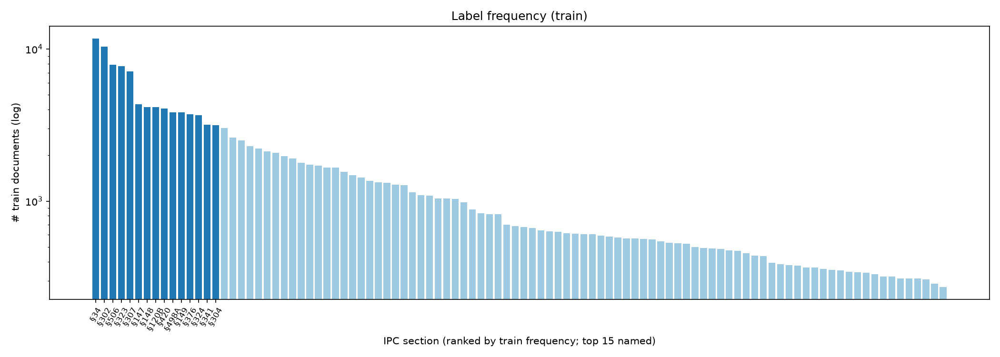
Imbalance. §34 occurs in 11,751 training documents, §450 in only 272 (43×). We split labels into tertiles by training frequency:
These buckets are used throughout the analysis.
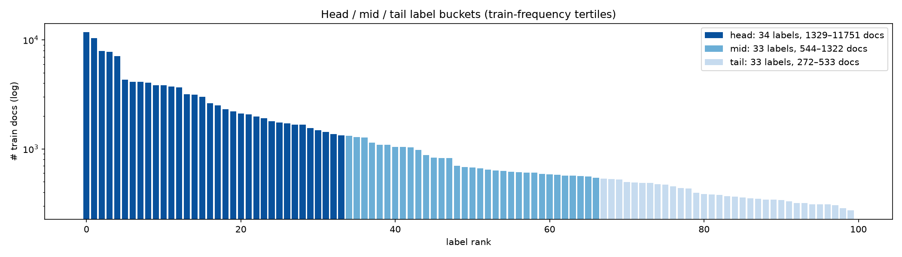
Length. More than half of all documents exceed the ~400 words that fit into BERT's 512-token input, so truncation matters (Figure 3).
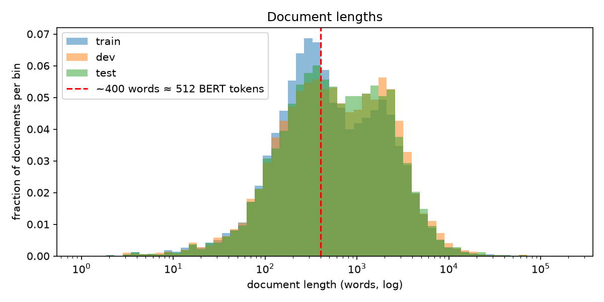
Co-occurrence. The strongest pairs are §147 & §148 (Jaccard 0.71), §148 & §149, and §302 & §34 (3,650 training documents).
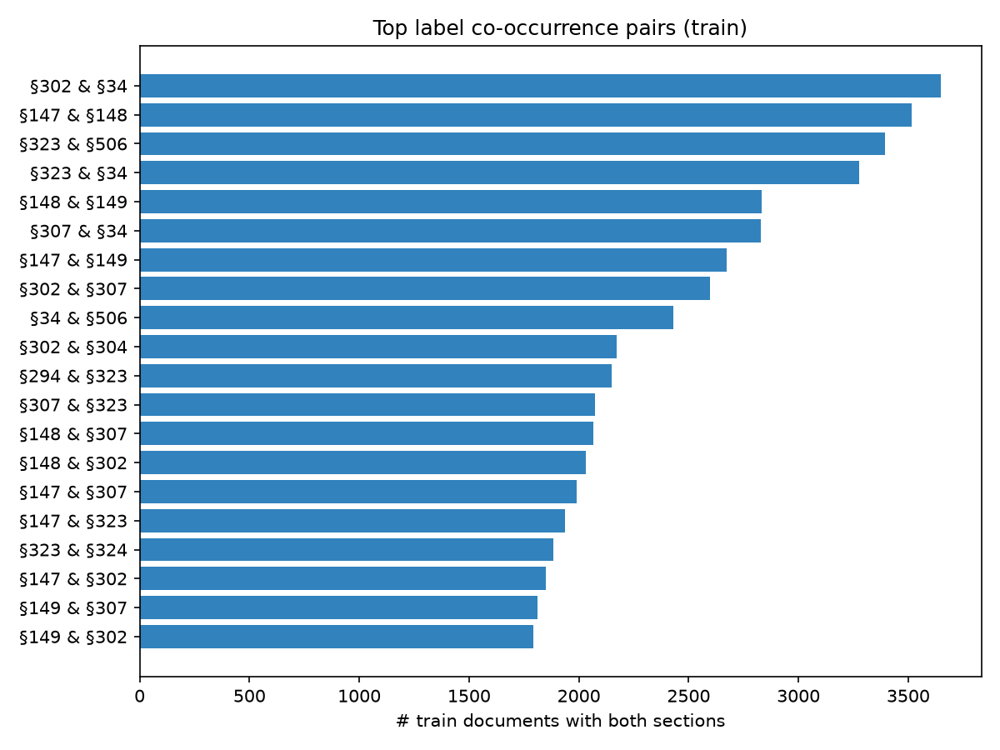
Data-quality findings. These matter for how the results should be read:
Every model writes the same outputs (dev and test probabilities in one fixed label order, tuned thresholds, metrics), and all of them are scored by a single unit-tested evaluation module, so the results are directly comparable.
bert-base-uncased and law-ai/InLegalBERT (LegalBERT further pre-trained on Indian court judgments; Paul et al., 2023). Each gets a 100-way sigmoid output layer.Three strategies are evaluated, all tuned on dev:
A document with no predicted label receives its single most likely label. Each model is reported at the strategy with the highest dev micro-F1, which was per-label for every learned model.
Table 2. Main results (test set; each model at its dev-selected threshold strategy; the citation diagnostic is shown for reference).
| Model | Thresholds | Micro-F1 | Macro-F1 | Micro-P | Micro-R | Samples-F1 | Head F1 | Mid F1 | Tail F1 |
|---|---|---|---|---|---|---|---|---|---|
| Keyword (statute terms) | global | 0.176 | 0.107 | 0.162 | 0.191 | 0.131 | 0.176 | 0.083 | 0.061 |
| Citation diagnostic | — | 0.701 | 0.627 | 0.703 | 0.699 | 0.640 | 0.759 | 0.621 | 0.497 |
| TF-IDF + LR | per-label | 0.691 | 0.585 | 0.707 | 0.675 | 0.654 | 0.708 | 0.582 | 0.463 |
| BERT-base, head | per-label | 0.497 | 0.417 | 0.429 | 0.590 | 0.482 | 0.546 | 0.409 | 0.293 |
| InLegalBERT, head | per-label | 0.520 | 0.445 | 0.466 | 0.589 | 0.500 | 0.557 | 0.438 | 0.336 |
| InLegalBERT, head+tail | per-label | 0.511 | 0.436 | 0.458 | 0.578 | 0.495 | 0.550 | 0.424 | 0.329 |
All threshold strategies for every model are in tables/results_all_strategies.csv.
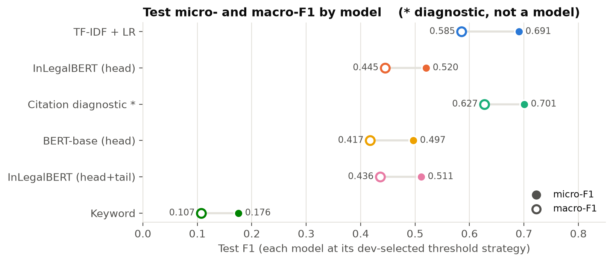
Thresholds matter, especially for BERT (Figure 6). The class weighting pushes BERT's probabilities up, so at 0.5 InLegalBERT reaches only 0.394 micro-F1 (precision 0.26). A tuned global threshold (0.77) gives 0.504 and per-label thresholds give 0.520. For TF-IDF the steps are 0.647 → 0.682 → 0.691.
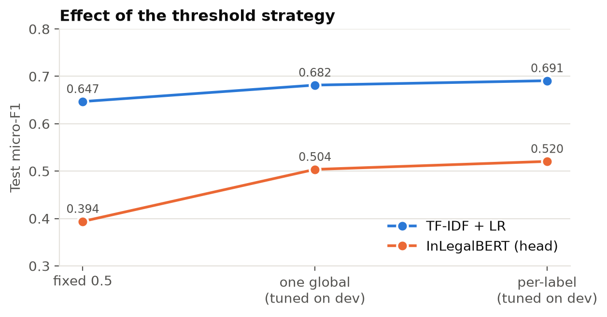
Legal pre-training helps: InLegalBERT beats bert-base-uncased by +2.4 micro-F1 and +2.7 macro-F1, with the largest gain on tail labels (+0.04). Head+tail truncation did not help (−0.9 micro-F1). Training was stable, and two of the three runs were still improving slightly at epoch 4 (Figure 7).
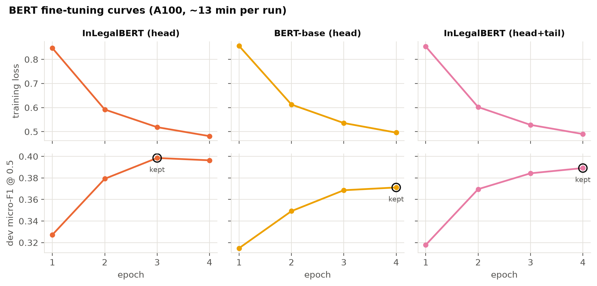
The ranking of models is identical in every frequency bucket, and the learned models lose 0.22–0.26 F1 from head to tail labels (Figure 8, Table 3). BERT's gap to TF-IDF is roughly constant (−0.15 head, −0.14 mid, −0.13 tail), so BERT is not specifically better on rare labels. Per-label F1 correlates with log training frequency (Pearson r = 0.63 for TF-IDF, 0.52 for InLegalBERT, Figure 9). For both models the hardest labels are the non-offence sections §2, §3 and §4.
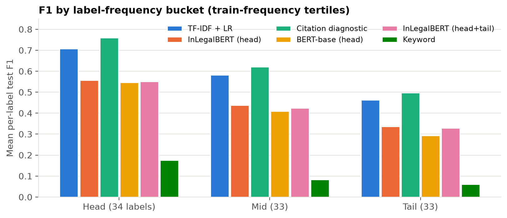
Table 3. Mean per-label F1 by bucket.
| Model | Head F1 | Mid F1 | Tail F1 |
|---|---|---|---|
| TF-IDF + LR | 0.708 | 0.582 | 0.463 |
| InLegalBERT (head) | 0.557 | 0.438 | 0.336 |
| Citation diagnostic | 0.759 | 0.621 | 0.497 |
| BERT-base (head) | 0.546 | 0.409 | 0.293 |
| InLegalBERT (head+tail) | 0.550 | 0.424 | 0.329 |
| Keyword | 0.176 | 0.083 | 0.061 |
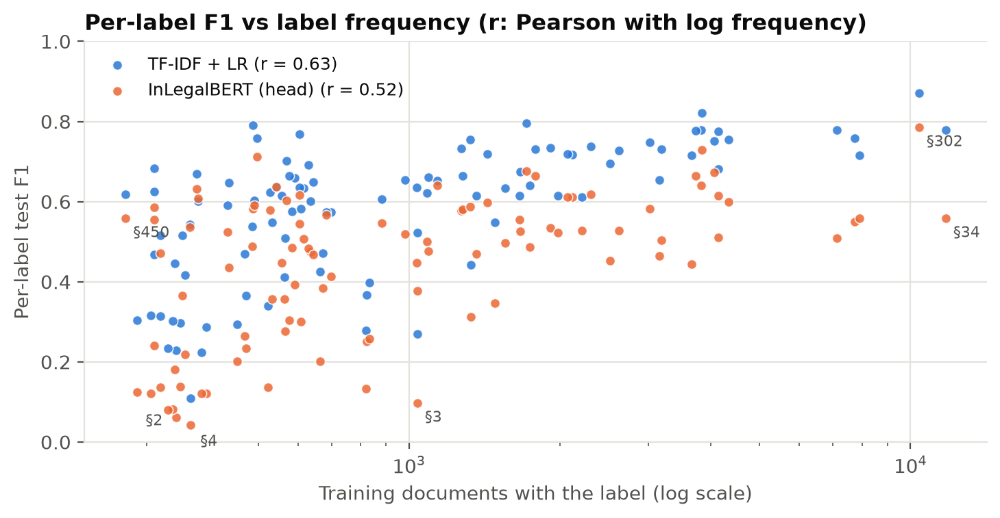
InLegalBERT matches or beats TF-IDF on only 1 of 100 labels (§337, +0.007). Its largest losses (−0.21 to −0.36 F1) are §437, §465, §324, §307, §326 and §34: sections where the cited number is strong evidence and neighbouring sections read alike in prose. Full per-label scores are in tables/per_label_f1.csv.
Errors concentrate in legally adjacent, often co-charged families, and InLegalBERT makes them 3–4× more often than TF-IDF (Figure 10):
Rioting (§147/§148/§149) and cheating vs criminal breach of trust (§420/§406) are confused less often (BERT 8–17%).
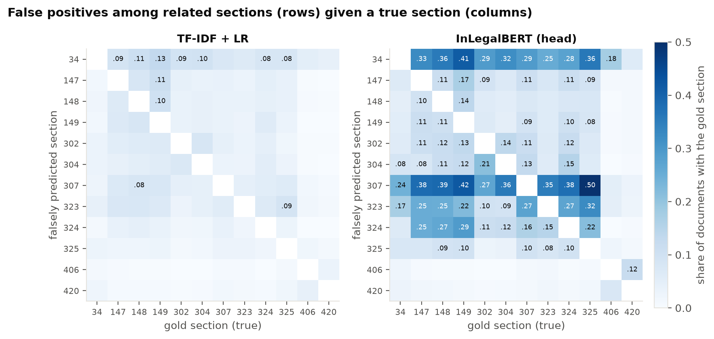
Splitting the test set by where a gold section is first cited explains most of the gap (Figure 11, Table 4):
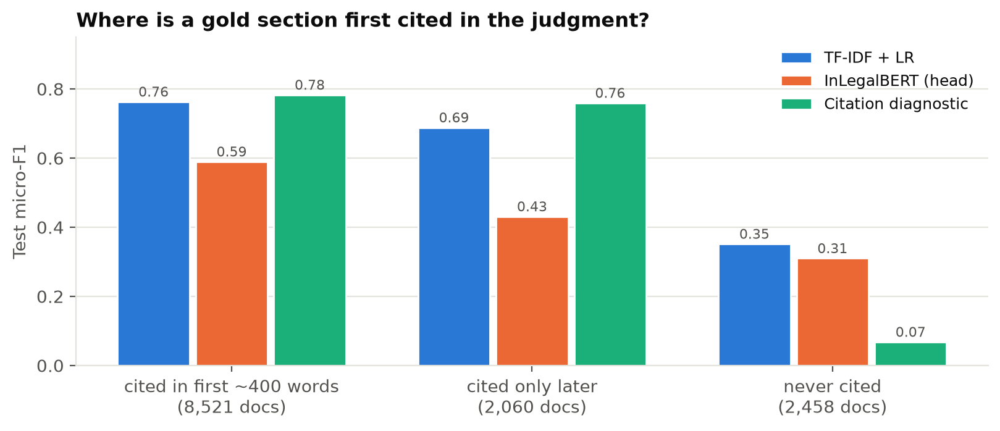
Table 4. Micro-F1 by citation position.
| Documents where a gold section is… | Docs | TF-IDF + LR | InLegalBERT (head) | Citation diagnostic |
|---|---|---|---|---|
| named in first ~400 words | 8521 | 0.763 | 0.590 | 0.783 |
| named only after ~400 words | 2060 | 0.688 | 0.431 | 0.759 |
| never named | 2458 | 0.352 | 0.310 | 0.068 |
370 test documents have document-level F1 ≥ 0.75 for TF-IDF and ≤ 0.25 for BERT; only 32 show the reverse. Eight of each were sampled at random (seed 42) and read in full; per-case comments are in the analysis notebook (notebooks/02_analysis.ipynb).
Table 5. Paired bootstrap over test documents (1,000 resamples, seed 42; 95% confidence intervals).
| Metric | TF-IDF + LR [95% CI] | InLegalBERT [95% CI] | Difference [95% CI] | p (two-sided) |
|---|---|---|---|---|
| micro-f1 | 0.691 [0.6857, 0.696] | 0.520 [0.5155, 0.5249] | -0.170 [-0.1747, -0.1659] | < 0.001 |
| macro-f1 | 0.585 [0.5779, 0.5917] | 0.445 [0.4379, 0.4502] | -0.141 [-0.1469, -0.134] | < 0.001 |
The difference is large and significant: no resample favoured BERT. This captures sampling variation in the test set, not training variance, because each BERT configuration was trained once.
The full discussion is in bns_discussion.md; the mapping is in tables/ipc_to_bns_mapping.csv.
Building the mapping. An official MHA/BPR&D correspondence table could not be accessed. Each of the 100 labels was checked row by row against a correspondence table compiled by the Director of CAPT Bhopal (a secondary source, cited in every row).
Coverage (Figure 12, Table 6):
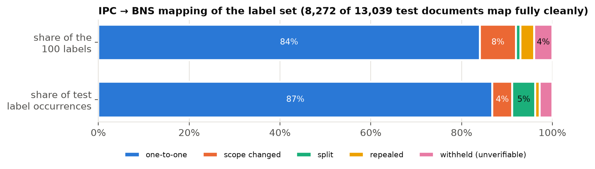
Table 6. Mapping coverage.
| Mapping type | Labels | Share of test label occurrences |
|---|---|---|
| one-to-one | 84 | 0.868 |
| scope changed | 8 | 0.044 |
| split | 1 | 0.050 |
| repealed | 3 | 0.010 |
| withheld (unverifiable) | 4 | 0.028 |
What breaks.
Update strategies.
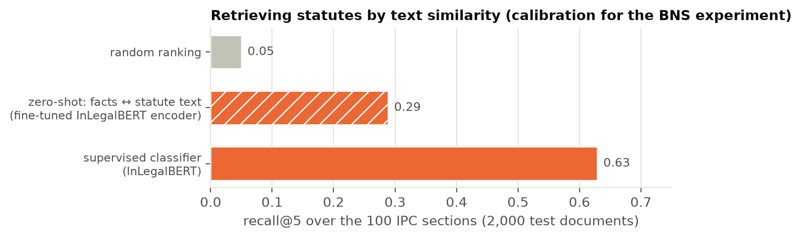
A local web application, Statute Finder, demonstrates the models (FastAPI back end; hand-built HTML/CSS/JS front end with a law-library theme in dark and light variants).
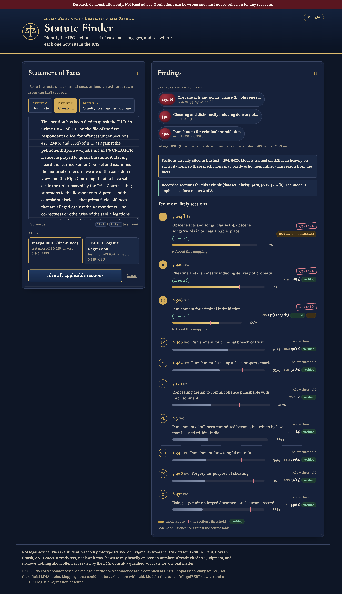
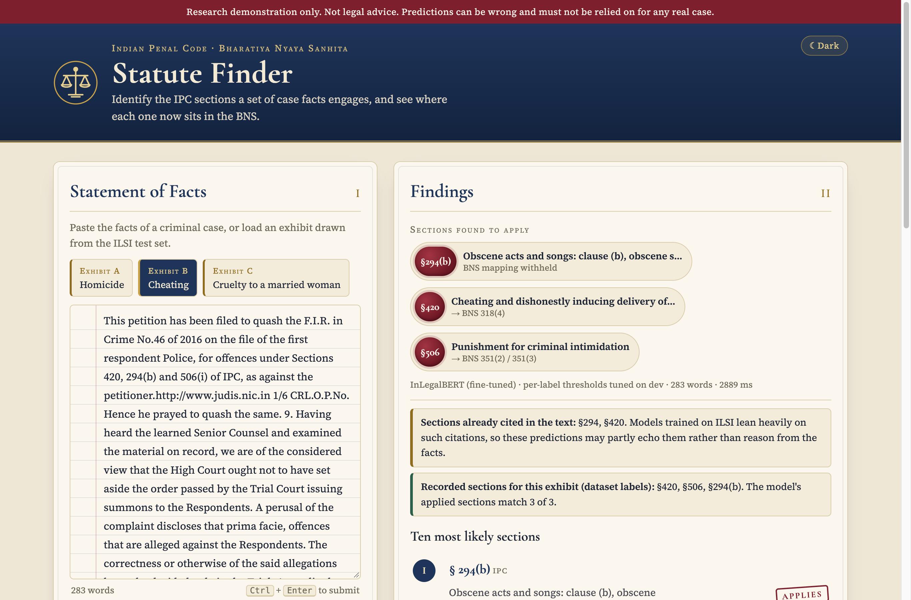
Limitations
Ethics
On ILSI, a well-tuned TF-IDF + logistic regression model beats fine-tuned BERT models by a large, significant margin. The analysis shows why: most judgments cite their own answer, whole-document lexical models read those citations, and 512-token BERT models see only some of them and do not reliably copy the ones they see. Where no citation exists, the problem is genuinely hard for all models. Legal-domain pre-training (InLegalBERT) helps modestly, especially for rare sections. The move to the BNS makes citation-based models fragile, because section numbers change meaning and new offences have no training data.
Future work
| Component | Setting |
|---|---|
| Data split | Official ILSI train / dev / test (42,835 / 10,200 / 13,039) |
| Keyword baseline | Statute-text TF-IDF, English stop words, alphabetic tokens; top-k = 5 (dev-selected from 5/10/15/25) |
| TF-IDF features | word 1–2-grams, max 100,000 features, sublinear tf, min_df 3, max_df 0.9, float32 |
| Logistic regression | one-vs-rest, liblinear, class_weight = balanced, C = 1 (dev-selected from 0.5/1), 4 threads |
| BERT encoders | bert-base-uncased; law-ai/InLegalBERT |
| Sequence length | 512 tokens; head (510) or head+tail (128 + 382) |
| Optimisation | AdamW, lr 2e-5, linear schedule, 10% warm-up, weight decay 0.01, 4 epochs, fp16 |
| Batch | 16 per step × 2 gradient accumulation = 32 |
| Loss | BCE with logits, pos_weight = neg/pos clipped to [1, 30] |
| Model selection | best epoch by dev micro-F1 at 0.5 |
| Thresholds | fixed 0.5; global grid 0.05–0.95 step 0.01; per-label (≥ 5 dev positives) |
| Seeds | 42 everywhere |
| Compute | Baselines: Apple M1 (8 GB RAM), TF-IDF LR ≈ 30 min. BERT: Colab NVIDIA A100 40 GB, ≈ 13 min per run |
| Software | Python 3.11, PyTorch 2.14 (Mac) / 2.11 (Colab), transformers 5.20.2, datasets 5.1.0, scikit-learn 1.9.1 |
Table A1. BERT training log per epoch.
| Run | Epoch | Train loss | Dev loss | Dev micro-F1 @0.5 | Dev macro-F1 @0.5 |
|---|---|---|---|---|---|
| InLegalBERT (head) | 1 | 0.847 | 0.676 | 0.327 | 0.254 |
| InLegalBERT (head) | 2 | 0.592 | 0.598 | 0.379 | 0.306 |
| InLegalBERT (head) | 3 | 0.519 | 0.573 | 0.399 | 0.326 |
| InLegalBERT (head) | 4 | 0.481 | 0.564 | 0.396 | 0.324 |
| BERT-base (head) | 1 | 0.856 | 0.705 | 0.315 | 0.242 |
| BERT-base (head) | 2 | 0.612 | 0.616 | 0.349 | 0.275 |
| BERT-base (head) | 3 | 0.536 | 0.588 | 0.369 | 0.294 |
| BERT-base (head) | 4 | 0.496 | 0.583 | 0.371 | 0.297 |
| InLegalBERT (head+tail) | 1 | 0.853 | 0.690 | 0.318 | 0.246 |
| InLegalBERT (head+tail) | 2 | 0.602 | 0.611 | 0.370 | 0.300 |
| InLegalBERT (head+tail) | 3 | 0.528 | 0.586 | 0.384 | 0.312 |
| InLegalBERT (head+tail) | 4 | 0.490 | 0.580 | 0.389 | 0.316 |
All 100 ILSI labels with their training frequency, frequency bucket and BNS counterpart. verified = yes means confirmed by an explicit row of the source table (or ILSI's statute text for repealed sections). Empty BNS cells are mappings withheld because they could not be verified. Notes and sources for every row are in tables/ipc_to_bns_mapping.csv.
| ipc_section | ipc_title | train_docs | bucket | bns_sections | mapping_type | verified |
|---|---|---|---|---|---|---|
| 2 | Punishment of offences committed within India | 343 | tail | 1(3) | one_to_one | yes |
| 3 | Punishment of offences committed beyond, but which by law may be tried within, India | 1038 | mid | 1(4) | one_to_one | yes |
| 4 | Extension of Code to extra-territorial offences | 367 | tail | 1(5) | one_to_one | yes |
| 5 | Certain laws not to be affected by this Act | 454 | tail | 1(6) | one_to_one | yes |
| 13 | [Repealed] Definition of 'Queen' | 341 | tail | repealed | yes | |
| 34 | Acts done by several persons in furtherance of common intention | 11751 | head | 3(5) | one_to_one | yes |
| 107 | Abetment of a thing | 699 | mid | 45 | one_to_one | yes |
| 109 | Punishment of abetment if the act abetted is committed in consequence and where no express provision is made for its punishment | 1040 | mid | 49 | one_to_one | yes |
| 114 | Abettor present when offence is committed | 350 | tail | 54 | one_to_one | yes |
| 120 | Concealing design to commit offence punishable with imprisonment | 823 | mid | 60 | one_to_one | yes |
| 120B | Punishment of criminal conspiracy | 4141 | head | 61(2) | one_to_one | yes |
| 143 | Punishment (for being member of unlawful assembly) | 617 | mid | unclear | no | |
| 147 | Punishment for rioting | 4330 | head | 191(2) | one_to_one | yes |
| 148 | Rioting, armed with deadly weapon | 4142 | head | 191(3) | one_to_one | yes |
| 149 | Every member of unlawful assembly guilty of offence committed in prosecution of common object | 3822 | head | 190 | one_to_one | yes |
| 155 | Liability of person for whose benefit riot is committed | 338 | tail | 193(2) | one_to_one | yes |
| 156 | Liability of agent of owner or occupier for whose benefit riot is committed | 665 | mid | 193(3) | one_to_one | yes |
| 161 | [Repealed] Public servant taking gratification | 834 | mid | repealed | yes | |
| 164 | [Repealed] Punishment for abetting offence defined in section 162 or 163 by public servant | 394 | tail | repealed | yes | |
| 173 | Preventing service of summons or other proceeding, or preventing publication thereof | 524 | tail | 207 | one_to_one | yes |
| 174A | Non-appearance in response to a proclamation under section 82 of Act 2 of 1974 | 488 | tail | 209 | one_to_one | yes |
| 186 | Obstructing public servant in discharge of public functions | 684 | mid | 221 | one_to_one | yes |
| 188 | Disobedience to order duly promulgated by public servant | 528 | tail | 223 | one_to_one | yes |
| 190 | Threat of injury to induce person to refrain from applying for protection to public servant | 305 | tail | 225 | one_to_one | yes |
| 193 | Punishment for false evidence | 470 | tail | 229 | one_to_one | yes |
| 200 | Using as true such declaration knowing it to be false | 287 | tail | 237 | one_to_one | yes |
| 201 | Causing disappearance of evidence of offence, or giving false information to screen offender | 1911 | head | 238 | one_to_one | yes |
| 228 | Intentional insult or interruption to public servant sitting in judicial proceeding | 330 | tail | 267 | one_to_one | yes |
| 229A | Failure by person released on bail or bond to appear in Court | 605 | mid | 269 | one_to_one | yes |
| 279 | Rash driving or riding on a public way | 498 | tail | 281 | one_to_one | yes |
| 294 | Obscene acts and songs | 3016 | head | 296 | one_to_one | yes |
| 299 | Culpable homicide | 385 | tail | 100 | one_to_one | yes |
| 300 | Murder | 1483 | head | 101 | one_to_one | yes |
| 302 | Punishment for murder | 10391 | head | 103(1) | one_to_one | yes |
| 304 | Punishment for culpable homicide not amounting to murder | 3157 | head | 105 | one_to_one | yes |
| 304A | Causing death by negligence | 569 | mid | 106(1) | one_to_one | yes |
| 304B | Dowry death | 1271 | mid | 80 | one_to_one | yes |
| 306 | Abetment of suicide | 1714 | head | 108 | one_to_one | yes |
| 307 | Attempt to murder | 7124 | head | 109 | one_to_one | yes |
| 308 | Attempt to commit culpable homicide | 544 | mid | 110 | one_to_one | yes |
| 313 | Causing miscarriage without woman's consent | 821 | mid | 89 | one_to_one | yes |
| 320 | Grievous hurt | 566 | mid | 116 | modified | yes |
| 323 | Punishment for voluntarily causing hurt | 7742 | head | 115(2) | one_to_one | yes |
| 324 | Voluntarily causing hurt by dangerous weapons or means | 3662 | head | 118(1) | one_to_one | yes |
| 325 | Punishment for voluntarily causing grievous hurt | 2619 | head | 117(2) | one_to_one | yes |
| 326 | Voluntarily causing grievous hurt by dangerous weapons or means | 2513 | head | 118(2) | one_to_one | yes |
| 332 | Voluntarily causing hurt to deter public servant from his duty | 881 | mid | 121(1) | one_to_one | yes |
| 336 | Act endangering life or personal safety of others | 585 | mid | 125 | one_to_one | yes |
| 337 | Causing hurt by act endangering life or personal safety of others | 380 | tail | 125(a) | one_to_one | yes |
| 338 | Causing grievous hurt by act endangering life or personal safety of others | 319 | tail | 125(b) | one_to_one | yes |
| 341 | Punishment for wrongful restraint | 3186 | head | 126(2) | one_to_one | yes |
| 342 | Punishment for wrongful confinement | 1086 | mid | 127(2) | one_to_one | yes |
| 353 | Assault or criminal force to deter public servant from discharge of his duty | 1279 | mid | 132 | one_to_one | yes |
| 354 | Assault or criminal force to woman with intent to outrage her modesty | 2210 | head | 74 | one_to_one | yes |
| 363 | Punishment for kidnapping | 1787 | head | 137(2) | modified | yes |
| 364 | Kidnapping or abducting in order to murder | 558 | mid | 140(1) | one_to_one | yes |
| 365 | Kidnapping or abducting with intent secretly and wrongfully to confine person | 435 | tail | 140(3) | one_to_one | yes |
| 366 | Kidnapping, abducting or inducing woman to compel her marriage, etc. | 1433 | head | 87 | one_to_one | yes |
| 366A | Procuration of minor girl | 310 | tail | 96 | modified | yes |
| 375 | Rape | 358 | tail | 63 | modified | yes |
| 376 | Punishment for rape | 3728 | head | 64 | one_to_one | yes |
| 379 | Punishment for theft | 1662 | head | 303(2) | one_to_one | yes |
| 380 | Theft in dwelling house, etc. | 635 | mid | 305 | modified | yes |
| 384 | Punishment for extortion | 353 | tail | 308(2) | one_to_one | yes |
| 389 | Putting person in fear of accusation of offence, in order to commit extortion | 310 | tail | 308(7) | one_to_one | yes |
| 392 | Punishment for robbery | 1093 | mid | 309(4) | one_to_one | yes |
| 394 | Voluntarily causing hurt in committing robbery | 630 | mid | 309(6) | one_to_one | yes |
| 395 | Punishment for dacoity | 644 | mid | 310(2) | one_to_one | yes |
| 397 | Robbery or dacoity, with attempt to cause death or grievous hurt | 1362 | head | 311 | one_to_one | yes |
| 406 | Punishment for criminal breach of trust | 2305 | head | 316(2) | one_to_one | yes |
| 409 | Criminal breach of trust by public servant, or by banker, merchant or agent | 1035 | mid | 316(5) | one_to_one | yes |
| 411 | Dishonestly receiving stolen property | 592 | mid | 317(2) | one_to_one | yes |
| 415 | Cheating | 319 | tail | 318(1) | one_to_one | yes |
| 417 | Punishment for cheating | 486 | tail | 318(2) | one_to_one | yes |
| 419 | Punishment for cheating by personation | 533 | tail | 319(2) | one_to_one | yes |
| 420 | Cheating and dishonestly inducing delivery of property | 4057 | head | 318(4) | one_to_one | yes |
| 427 | Mischief causing damage to the amount of fifty rupees | 1741 | head | unclear | no | |
| 436 | Mischief by fire or explosive substance with intent to destroy house, etc. | 437 | tail | 326(g) | one_to_one | yes |
| 437 | Mischief with intent to destroy or make unsafe a decked vessel or one of twenty tons burden | 577 | mid | 327(1) | modified | yes |
| 438 | Punishment for the mischief described in section 437 committed by fire or explosive substance | 1322 | mid | 327(2) | one_to_one | yes |
| 447 | Punishment for criminal trespass | 604 | mid | 329(3) | one_to_one | yes |
| 448 | Punishment for house-trespass | 982 | mid | 329(4) | one_to_one | yes |
| 450 | House-trespass in order to commit offence punishable with imprisonment for life | 272 | tail | 332(b) | one_to_one | yes |
| 452 | House-trespass after preparation for hurt, assault or wrongful restraint | 1554 | head | 333 | one_to_one | yes |
| 457 | Lurking house-trespass or house-breaking by night in order to commit offence punishable with imprisonment | 365 | tail | 331(4) | one_to_one | yes |
| 465 | Punishment for forgery | 609 | mid | 336(2) | one_to_one | yes |
| 467 | Forgery of valuable security, will, etc. | 1667 | head | 338 | one_to_one | yes |
| 468 | Forgery for purpose of cheating | 2119 | head | 336(3) | one_to_one | yes |
| 471 | Using as genuine a forged document or electronic record | 2073 | head | 340(2) | one_to_one | yes |
| 482 | Punishment for using a false property mark | 1329 | head | 345(3) | one_to_one | yes |
| 494 | Marrying again during lifetime of husband or wife | 310 | tail | 82(1) | one_to_one | yes |
| 498 | Enticing or taking away or detaining with criminal intent a married woman | 564 | mid | 84 | modified | yes |
| 498A | Husband or relative of husband of a woman subjecting her to cruelty | 3840 | head | 85 | one_to_one | yes |
| 500 | Punishment for defamation | 377 | tail | 356(2) | one_to_one | yes |
| 504 | Intentional insult with intent to provoke breach of the peace | 1982 | head | 352 | modified | yes |
| 506 | Punishment for criminal intimidation | 7899 | head | 351(2); 351(3) | one_to_many | yes |
| 509 | Word, gesture or act intended to insult the modesty of a woman | 491 | tail | 79 | one_to_one | yes |
| 511 | Punishment for attempting to commit offences punishable with imprisonment for life or other imprisonment | 674 | mid | 62 | one_to_one | yes |
| 294(b) | Obscene acts and songs: clause (b), obscene songs/words in or near a public place | 1139 | mid | unclear | no | |
| 376(2) | Punishment for rape: sub-section (2), aggravated rape | 473 | tail | unclear | no |
These provisions are marked as new in the source table; none has training data in ILSI.
| bns_section | title | status |
|---|---|---|
| 48 | Abetment outside India for offence in India | new provision |
| 69 | Sexual intercourse by employing deceitful means etc. (incl. false promise of marriage) | new offence |
| 95 | Hiring, employing or engaging a child to commit an offence | new offence |
| 103(2) | Murder by a group of five or more on grounds of race, caste, community, sex, place of birth, language, personal belief ('mob lynching') | new sub-clause |
| 106(2) | Causing death by rash and negligent driving and escaping without reporting ('hit-and-run') | new; table notes it was kept on hold, not in force from 1 July 2024 |
| 111 | Organised crime | new offence |
| 112 | Petty organised crime | new offence |
| 113 | Terrorist act | new offence |
| 117(3) | Grievous hurt causing permanent disability or persistent vegetative state | new sub-clause |
| 117(4) | Grievous hurt by a group of five or more on grounds of race, caste, etc. | new sub-clause |
| 152 | Act endangering sovereignty, unity and integrity of India | described as newly added in the table (often discussed as replacing IPC 124A sedition; not in the ILSI label set) |
| 197(1)(d) | Making or publishing false or misleading information jeopardising the sovereignty, unity, integrity or security of India | new clause |
| 226 | Attempt to commit suicide to compel or restrain exercise of lawful power | new offence |
| 304 | Snatching | new offence |
| 324(3) | Mischief causing loss or damage to any property including Government or local authority property | new sub-section |
The project repository contains all code. From a fresh checkout with Python 3.11:
make setup # virtual environment, pinned packages, Jupyter kernel
make data # download ILSI (MD5-checked), inspect, build parquet files
make eda # exploratory notebook
make baselines # keyword, citation diagnostic, TF-IDF + LR
make colab-pack # bundle for Colab; then run colab/train_bert.ipynb (3 runs)
make compare # validate all outputs, master table, analysis notebook
make bns # IPC -> BNS mapping, coverage, zero-shot retrieval
make report # regenerate report figures, tables and REPORT.pdf
make app # web demo at http://127.0.0.1:7860
make test # unit tests
Contents of this report folder
REPORT.md / REPORT.pdf: this report.bns_discussion.md: the full IPC → BNS discussion.figures/: all figures (EDA, results, analysis, BNS, application screenshots).tables/: every table as CSV, plus Markdown versions:results_main, results_all_strategies), bucket_f1, per_label_f1, citation_position, bootstrap, training_log;